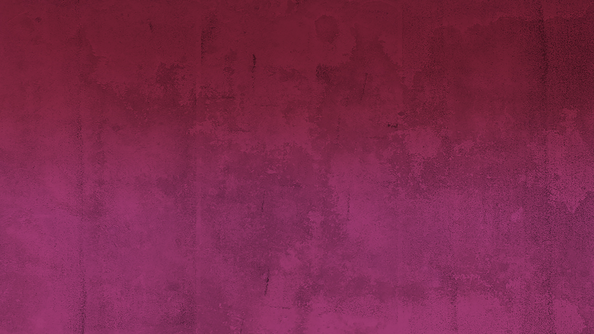

Background Environment¶
Static Objects¶
The background static objects that don’t interact with the music features consist of a static purple skybox and a fast moving ground earth:
| Sky Box Purple Background | Earth |
|  |  |
Two layers of contours of ruins decorated the far scene of the interface:
| Ruins Closer |
 |
| Ruins Further |
 |
In order to convey the effect that girl is running towards right whilst its relative x-position to the screen boundary maintains, functions need to be defined to let the various objects such as earth and ruins scroll to the left at different speeds which also engaged a parallel effect between further and closer objects.
[SerializeField] private float scrollSpeed = -4f;
[SerializeField] private int resetX = -32;
void Start() {
// override the start position to its initial sprite position
startPos = transform.position;
}
void Update() {
xPos = transform.position.x;
yPos = transform.position.y;
float displacement = Time.deltaTime * scrollSpeed;
transform.Translate(Vector2.right * displacement);
// when the center of Wave scrolls to one screen width to the left of the original center,
// reset the X of the Wave entity to it's original starting position
if (xPos < resetX) {
transform.position = new Vector3(startPos.x, yPos, startPos.z);
}
...
}
Music Visualisation¶
Spectrum¶
A set of spectrum has been instantiated as background decoration indicating the beat detections:

Beat Generated Wave Spectrum
This visualisation has been implemented utilising the InstantiateBgdSpectrum class:
public class InstantiateBgdSpectrum : MonoBehaviour {
[SerializeField] Vector3 firstBlockPos = new Vector3(0f, 0f, 0f);
public float maxScale;
public GameObject block;
GameObject[] blockArray = new GameObject[8];
void Start() {
for (int i = 0; i < blockArray.Length; i++) {
GameObject instanceBlock = (GameObject)Instantiate(block);
instanceBlock.transform.position = this.transform.position;
instanceBlock.transform.parent = this.transform;
instanceBlock.name = "InstanceBlock" + i;
instanceBlock.transform.position = new Vector3(
firstBlockPos.x + (0.5f * i),
firstBlockPos.y,
firstBlockPos.z);
blockArray[i] = instanceBlock;
}
}
void Update() {
for (int i = 0; i < blockArray.Length; i++) {
if (block != null) {
//Debug.Log(blockArray[i].transform.localScale);
blockArray[i].transform.localScale = new Vector2(
0.9f,
AudioHelper.bandBuffer[i] * maxScale + 2);
}
}
}
}
Bubble¶
A bubble decoration in the background visualises the beat detection by expansion and contraction.
| Bubble Decoration Contracted | Bubble Decoration Expanded |
 |
 |
This visualisation has been implemented utilising the ScaleOnAmplitude class:
public class ScaleOnAmplitude : MonoBehaviour {
public float startScale, maxScale;
public bool useBuffer;
void Start() {
//material = GetComponent<MeshRenderer>().materials[0];
}
void Update() {
if (useBuffer) {
transform.localScale = new Vector3(
(AudioHelper.amplitude * maxScale) + startScale,
(AudioHelper.amplitude * maxScale) + startScale,
(AudioHelper.amplitude * maxScale) + startScale);
} else {
transform.localScale = new Vector3(
(AudioHelper.amplitude * maxScale) + startScale,
(AudioHelper.amplitude * maxScale) + startScale,
(AudioHelper.amplitude * maxScale) + startScale);
}
}
}